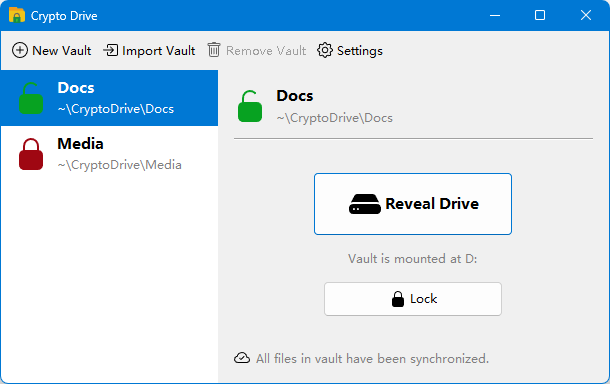
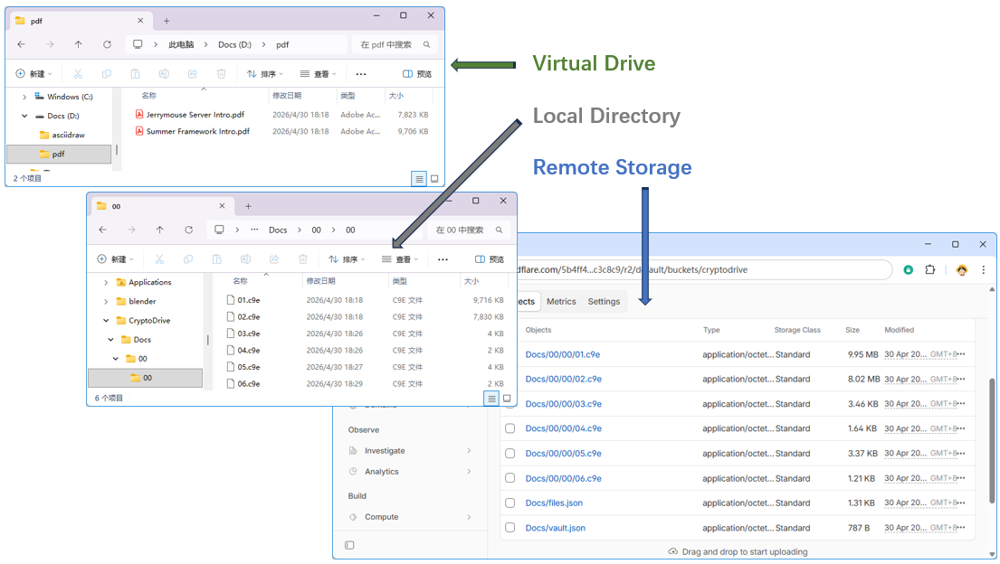

CryptoDrive
CryptoDrive turns any folder on your computer into a password-protected vault that appears as a regular drive in your file manager. Everything you save into it is transparently encrypted before it touches disk — drag, drop, edit, and open files like usual, while only ciphertext ever leaves your machine.

Download
Pre-compiled release can be downloaded from GitHub. Source code can also be get from GitHub.
Features
Virtual encrypted drive
Unlock a vault with your master password and CryptoDrive mounts it as a native
drive (for example X:\ on Windows, /Volumes/MyVault on macOS, a mount point
on Linux). Any application — editors, IDEs, media players, backup tools — can
read and write files through the drive with zero awareness that the storage is
encrypted.

Strong, modern cryptography
- AES-256-GCM authenticated encryption for every file.
- PBKDF2-HMAC-SHA256 (1 000 000 iterations by default) derives the key encryption key from your master password.
- A unique random DEK (Data Encryption Key) per vault and a unique random FEK (File Encryption Key) per file — compromising one file never exposes another.
- Your master password and unwrapped keys live only in memory while the vault is unlocked and are zeroized on lock or exit.
Cloud-sync friendly
Vault directories contain nothing but ciphertext blobs and a small metadata file. Point Dropbox, Google Drive, OneDrive, iCloud, or any S3-compatible bucket at the vault folder and sync without ever uploading plaintext. Built-in connectors for any S3-compatible are included.
Encrypted file names and folder structure
Not just file contents — file names and the directory tree itself are encrypted
and held in a single metadata file. A snooper who gains access to the
ciphertext directory sees only opaque blob names like 0f/65/6a.c9e.
Multi-vault management
Manage as many vaults as you like from one tray-resident app. Each vault has its own password, its own mount point, and its own optional cloud sync target. Unlock, lock, import, and configure vaults from the main window.
Single-instance, tray-resident
Launching CryptoDrive a second time activates the existing window instead of starting a duplicate. The app lives quietly in the system tray after you close the main window, keeping your unlocked vaults mounted until you explicitly lock them or quit.
Crash- and sync-safe on-disk format
Files are encrypted in fixed 32 KiB blocks, each with its own IV and GCM tag.
A partial write or a sync conflict damages only the affected block — the rest
of the file still decrypts and verifies. Any orphaned ciphertext blob (for
example, one that arrived via cloud sync before its metadata entry) is
surfaced automatically in a virtual lost+found directory so you never lose
access to recoverable data.
Cross-platform
Packaged as a native app image per platform (Windows, macOS Intel, macOS Apple Silicon, Linux x86-64) with its own bundled Java runtime. Install it and run — no separate JDK required.
How it works at a glance
- Create a vault — pick a folder and a master password. CryptoDrive
generates a random DEK, wraps it with a key derived from your password, and
writes
vault.jsonalongside your chosen folder. - Unlock — enter your password. The DEK is unwrapped into memory and the vault is mounted as a drive.
- Use it — every read and write through the mounted drive is encrypted or decrypted on the fly using the per-file FEK (itself wrapped by the DEK).
- Lock — on demand, at shutdown, or when you quit. The drive is unmounted, the DEK is zeroized, and only ciphertext remains on disk.
See the Guide to get started, the Security page for the full threat model and crypto details, and the Sync page to wire up cloud backup.